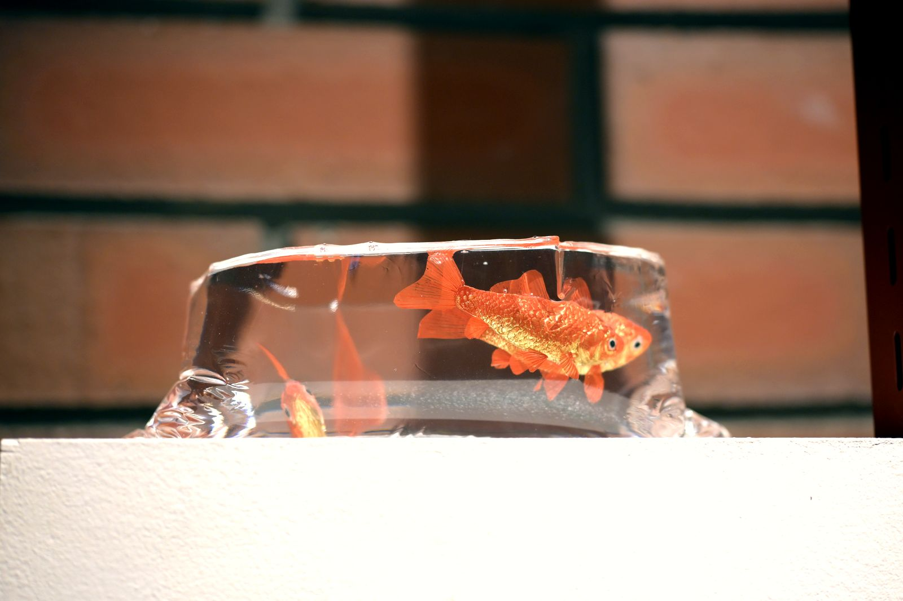

工芸リアリズムとは何か

工芸リアリズムという言葉は、写実とは何の関係もありません。
「リアリズム」と言うと、多くの方はまず写実を思い浮かべると思います。対象そっくりに、精巧に、本物らしく。ですが私が使っている工芸リアリズムという言葉は、その方向を向いていません。金魚をどれだけ精巧に模すかではなく、金魚が金魚として存在するための条件——水、光、器、素材、見る者の記憶——を組み直すこと。それが、私にとっての工芸リアリズムです。
鋳造した金魚は、樹脂の内部に置いています。この樹脂は、作品を保護するための外殻でも、後から加えた装飾でもありません。樹脂は環境として機能させているつもりです。つまり、水のもうひとつの形態として。金魚は水を必要とする生き物で、水を離れては金魚でいられません。金魚を金属として鋳造した時点で、すでに一つの条件を失っています。樹脂は、その失われた条件を、別のかたちで取り戻すための試みです。
色もまた、後から塗るものではないと思っています。磨き、加熱、酸素、温度。これらの条件を精密に調整することで、色は生成されます。赤は赤色の顔料としてではなく、金属が特定の環境に置かれたときに生じる現象として立ち上げたいと考えています。工芸リアリズムで問いたいのは、色や形をどれだけ本物そっくりに再現するかではなく、色や形が生まれてくるための条件そのものを、工芸という手段でどう組み立て直すか、ということです。
工芸とは、人間を含めた生態系を表現する営みだと考えています。素材・環境・身体・知覚の関係のなかで、何かが現に立ち上がる。私がつくろうとしているのは、その「現れ」そのものです。技巧による写実ではなく、存在の条件そのものを組み直す態度でありたいと思っています。